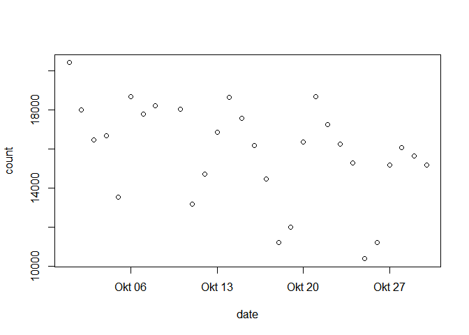
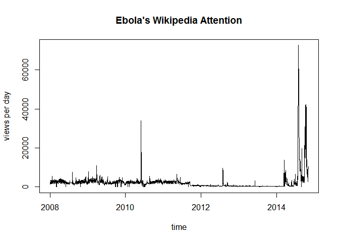
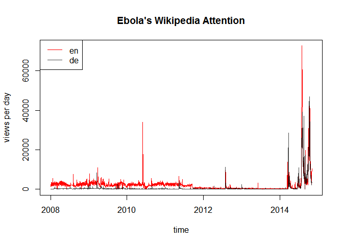

Introducing Wikipediatrend – Easy Analyses of Public Attention, Anxiety and Information Seeking
Peter Meißner
2014-11-06

Introduction
Wikipedia provides a lot of valuable meta data. One type of information are page access statistics – e.g. http://stats.grok.se/en/201409/Peter_Principle. Another type are the info pages – e.g. https://en.wikipedia.org/w/index.php?title=Peter_Principle&action=info. While the latter falls into the jurisdiction of the MediaWiki-package , this package allows loading page view statistics into R.
Stats.grok.se API and the wikipediatrend package
http://stats.grok.se retrieves Wikipedia page access statistics on a daily basis. The information is either presented in HTML or provided as JSON data.
http://stats.grok.se/en/201409/Peter_Principleversus
http://stats.grok.se/json/en/201409/Peter_PrincipleA single request results in data for a specific entry, from one of Wikipedia’s different language subdomains and for all days of a given month. The wikipediatrend package draws on this Web API and provides a consistent and convenient way to use those data within R. Furthermore the package not only takes care of the communication between the Web API at stats.grok.se and your local R session but also provides means to minimize traffic and workload for stats.grok.se-server – data is (if user decides so) stored locally in CSV format and reused for subsequent requests.
A first tutorial
require(wikipediatrend)## Loading required package: wikipediatrendThe workhorse of the package is the wp_trend() function with several arguments:
- page [
"Peter_principle"]:
… here goes the name of the page - from [
Sys.Date()-30]:
… starting date of the timespan to be considered - to [
Sys.Date()]:
… end date of the timespan to be considered - lang [
"en"]:
… language of the page - friendly [
F]:
… shouldwp_trend()try minimize workload on behalf ofstats.grok.se - requestFrom [
"anonymous"]:
… do you care to identify yourself towardsstats.grok.se - userAgent [
FALSE]
… do you care to send information on your plattform, R version and the package used to make server requests
Let’s have a first run using the defaults:
peter_principle <- wp_trend()##
## With option 'friendly' set to FALSE subsequent requests
## of the same wikipedia-page cause the server -- which is kindly
## providing information for you -- to work hard to get the same
## stuff over and over and over and over again. Do not bore
## the server - be friendly.
##
## More information is found via '?wp_trend'.
##
## http://stats.grok.se/json/en/201410/Peter_principle
## http://stats.grok.se/json/en/201411/Peter_principleThe function informs us that using the friendly option might be a good idea and shows us which URLs it used to retrieve the information we were asking for.
The function’s return is a data frame with two variables date and count:
dim(peter_principle)## [1] 30 2class(peter_principle)## [1] "data.frame"head(peter_principle)## date count
## 1 2014-10-06 1272
## 2 2014-10-07 1473
## 3 2014-10-08 1312
## 4 2014-10-09 1486
## 5 2014-10-10 1107
## 6 2014-10-11 652We can use this information to visualize the page view trend. Using wp_wday() we can furthermore discriminate weekdays (black) from weekends (red).
plot( peter_principle,
col=ifelse( wp_wday(peter_principle$date) > 5 , "red", "black") ,
ylim=c(0, max(peter_principle$count)),
main="Peter Principle's Wikipedia Attention",
ylab="views per day", xlab="time")
lines(peter_principle)
Looking at the graph we can conclude that the Peter Principle as a work related phenomenon obviously is something that is most pressing on workdays – or maybe people in general just tend to use their computers less on weekends.
Being friendly
One of the most important features of the package is its friendly option. On the one hand, it saves us time when making subsequent requests of the same page because less pages have to be loaded. On the other hand, it serves to minimize workload on behalf of the stats.grok.se-server that kindly provides the information we are using.
The option can be set to different values:
- FALSE, the default, deactivates
wp_trend()’s friendly behavior altogether - TRUE, activates
wp_trend()’s friendly behavior and retreieved access statistics are stored on disk in CSV format viawrite.csv() - 1 is the same as TRUE
- 2, is the same as TRUE but storage takes place via
write.csv2()
Let’s try it out by making two subsequent requests to get access statistics for for information on ISIS.
file.remove("wp__Islamic_State_of_Iraq_and_the_Levant__en.csv")## Warning in
## file.remove("wp__Islamic_State_of_Iraq_and_the_Levant__en.csv"): cannot
## remove file 'wp__Islamic_State_of_Iraq_and_the_Levant__en.csv', reason 'No
## such file or directory'While for the first request the server has to provide information many times, the second request only asks for those months for which we do not have complete data already. Furthermore, wp_trend() informs us that the data has been stored in a CSV-file.
isis <- wp_trend("Islamic_State_of_Iraq_and_the_Levant", from="2013-01-01", friendly=T)## http://stats.grok.se/json/en/201301/Islamic_State_of_Iraq_and_the_Levant
## http://stats.grok.se/json/en/201302/Islamic_State_of_Iraq_and_the_Levant
## http://stats.grok.se/json/en/201303/Islamic_State_of_Iraq_and_the_Levant
## http://stats.grok.se/json/en/201304/Islamic_State_of_Iraq_and_the_Levant
## http://stats.grok.se/json/en/201305/Islamic_State_of_Iraq_and_the_Levant
## http://stats.grok.se/json/en/201306/Islamic_State_of_Iraq_and_the_Levant
## http://stats.grok.se/json/en/201307/Islamic_State_of_Iraq_and_the_Levant
## http://stats.grok.se/json/en/201308/Islamic_State_of_Iraq_and_the_Levant
## http://stats.grok.se/json/en/201309/Islamic_State_of_Iraq_and_the_Levant
## http://stats.grok.se/json/en/201310/Islamic_State_of_Iraq_and_the_Levant
## http://stats.grok.se/json/en/201311/Islamic_State_of_Iraq_and_the_Levant
## http://stats.grok.se/json/en/201312/Islamic_State_of_Iraq_and_the_Levant
## http://stats.grok.se/json/en/201401/Islamic_State_of_Iraq_and_the_Levant
## http://stats.grok.se/json/en/201402/Islamic_State_of_Iraq_and_the_Levant
## http://stats.grok.se/json/en/201403/Islamic_State_of_Iraq_and_the_Levant
## http://stats.grok.se/json/en/201404/Islamic_State_of_Iraq_and_the_Levant
## http://stats.grok.se/json/en/201405/Islamic_State_of_Iraq_and_the_Levant
## http://stats.grok.se/json/en/201406/Islamic_State_of_Iraq_and_the_Levant
## http://stats.grok.se/json/en/201407/Islamic_State_of_Iraq_and_the_Levant
## http://stats.grok.se/json/en/201408/Islamic_State_of_Iraq_and_the_Levant
## http://stats.grok.se/json/en/201409/Islamic_State_of_Iraq_and_the_Levant
## http://stats.grok.se/json/en/201410/Islamic_State_of_Iraq_and_the_Levant
## http://stats.grok.se/json/en/201411/Islamic_State_of_Iraq_and_the_Levant
##
## Results written to:
## D:/Peter/Dropbox/RPackages/wikipediatrend/wp__Islamic_State_of_Iraq_and_the_Levant__en.csvThe second request uses this previous saved information to minimize traffic and function execution time. If it downloads new data, it updates the data already stored on disk.
isis <- wp_trend("Islamic_State_of_Iraq_and_the_Levant", from="2012-12-01", friendly=T)## http://stats.grok.se/json/en/201212/Islamic_State_of_Iraq_and_the_Levant
## http://stats.grok.se/json/en/201411/Islamic_State_of_Iraq_and_the_Levant
##
## Results written to:
## D:/Peter/Dropbox/RPackages/wikipediatrend/wp__Islamic_State_of_Iraq_and_the_Levant__en.csvLast but not least, let’s have a look at the data …
plot( isis,
ylim=c(0, max(isis$count)),
main="ISIS' Wikipedia Attention",
ylab="views per day", xlab="time",
type="l")
… revealing what most might have already suspected: ISIS is quite a new phenomenon.
So what?
Cats
First of all we are now able to study cats:
cats <- wp_trend("Cat", from="2007-01-01", friendly=T)## http://stats.grok.se/json/en/200712/Cat
## http://stats.grok.se/json/en/200801/Cat
## http://stats.grok.se/json/en/200807/Cat
## http://stats.grok.se/json/en/201411/Cat
##
## Results written to:
## D:/Peter/Dropbox/RPackages/wikipediatrend/wp__Cat__en.csv # throw out extreme values
no_outlier <-
cats$count <
quantile(cats$count, na.rm=T, 0.99) &
cats$count >
quantile(cats$count, na.rm=T, 0.01)
cats <- cats[no_outlier,]
plot( cats,
col=ifelse( wp_wday(cats$date) > 5 , rgb(1,0,0,0.3), rgb(0,0,0,0.3)) ,
ylim=c(0, max(cats$count)),
main="Cats' Wikipedia Attention",
ylab="views per day", xlab="time")
lines(cats)
… and triumphantly can conclude:
Cats are sooooo 2012 and 2013..
Ebola
Or we can study how the desire to inform oneself about Ebola varies over time:
ebola_en <- wp_trend("Ebola", from="2008-01-01", friendly=T)## http://stats.grok.se/json/en/200801/Ebola
## http://stats.grok.se/json/en/200802/Ebola
## http://stats.grok.se/json/en/200803/Ebola
## http://stats.grok.se/json/en/200804/Ebola
## http://stats.grok.se/json/en/200805/Ebola
## http://stats.grok.se/json/en/200806/Ebola
## http://stats.grok.se/json/en/200807/Ebola
## http://stats.grok.se/json/en/200808/Ebola
## http://stats.grok.se/json/en/200809/Ebola
## http://stats.grok.se/json/en/200810/Ebola
## http://stats.grok.se/json/en/200811/Ebola
## http://stats.grok.se/json/en/200812/Ebola
## http://stats.grok.se/json/en/200901/Ebola
## http://stats.grok.se/json/en/200902/Ebola
## http://stats.grok.se/json/en/200903/Ebola
## http://stats.grok.se/json/en/200904/Ebola
## http://stats.grok.se/json/en/200905/Ebola
## http://stats.grok.se/json/en/200906/Ebola
## http://stats.grok.se/json/en/200907/Ebola
## http://stats.grok.se/json/en/200908/Ebola
## http://stats.grok.se/json/en/200909/Ebola
## http://stats.grok.se/json/en/200910/Ebola
## http://stats.grok.se/json/en/200911/Ebola
## http://stats.grok.se/json/en/200912/Ebola
## http://stats.grok.se/json/en/201001/Ebola
## http://stats.grok.se/json/en/201002/Ebola
## http://stats.grok.se/json/en/201003/Ebola
## http://stats.grok.se/json/en/201004/Ebola
## http://stats.grok.se/json/en/201005/Ebola
## http://stats.grok.se/json/en/201006/Ebola
## http://stats.grok.se/json/en/201007/Ebola
## http://stats.grok.se/json/en/201008/Ebola
## http://stats.grok.se/json/en/201009/Ebola
## http://stats.grok.se/json/en/201010/Ebola
## http://stats.grok.se/json/en/201011/Ebola
## http://stats.grok.se/json/en/201012/Ebola
## http://stats.grok.se/json/en/201101/Ebola
## http://stats.grok.se/json/en/201102/Ebola
## http://stats.grok.se/json/en/201103/Ebola
## http://stats.grok.se/json/en/201104/Ebola
## http://stats.grok.se/json/en/201105/Ebola
## http://stats.grok.se/json/en/201106/Ebola
## http://stats.grok.se/json/en/201107/Ebola
## http://stats.grok.se/json/en/201108/Ebola
## http://stats.grok.se/json/en/201109/Ebola
## http://stats.grok.se/json/en/201110/Ebola
## http://stats.grok.se/json/en/201111/Ebola
## http://stats.grok.se/json/en/201112/Ebola
## http://stats.grok.se/json/en/201201/Ebola
## http://stats.grok.se/json/en/201202/Ebola
## http://stats.grok.se/json/en/201203/Ebola
## http://stats.grok.se/json/en/201204/Ebola
## http://stats.grok.se/json/en/201205/Ebola
## http://stats.grok.se/json/en/201206/Ebola
## http://stats.grok.se/json/en/201207/Ebola
## http://stats.grok.se/json/en/201208/Ebola
## http://stats.grok.se/json/en/201209/Ebola
## http://stats.grok.se/json/en/201210/Ebola
## http://stats.grok.se/json/en/201211/Ebola
## http://stats.grok.se/json/en/201212/Ebola
## http://stats.grok.se/json/en/201301/Ebola
## http://stats.grok.se/json/en/201302/Ebola
## http://stats.grok.se/json/en/201303/Ebola
## http://stats.grok.se/json/en/201304/Ebola
## http://stats.grok.se/json/en/201305/Ebola
## http://stats.grok.se/json/en/201306/Ebola
## http://stats.grok.se/json/en/201307/Ebola
## http://stats.grok.se/json/en/201308/Ebola
## http://stats.grok.se/json/en/201309/Ebola
## http://stats.grok.se/json/en/201310/Ebola
## http://stats.grok.se/json/en/201311/Ebola
## http://stats.grok.se/json/en/201312/Ebola
## http://stats.grok.se/json/en/201401/Ebola
## http://stats.grok.se/json/en/201402/Ebola
## http://stats.grok.se/json/en/201403/Ebola
## http://stats.grok.se/json/en/201404/Ebola
## http://stats.grok.se/json/en/201405/Ebola
## http://stats.grok.se/json/en/201406/Ebola
## http://stats.grok.se/json/en/201407/Ebola
## http://stats.grok.se/json/en/201408/Ebola
## http://stats.grok.se/json/en/201409/Ebola
## http://stats.grok.se/json/en/201410/Ebola
## http://stats.grok.se/json/en/201411/Ebola
##
## Results written to:
## D:/Peter/Dropbox/RPackages/wikipediatrend/wp__Ebola__en.csvplot( ebola_en,
ylim=c(0, max(ebola_en$count)),
main="Ebola's Wikipedia Attention",
ylab="views per day", xlab="time",
type="l")
lines(ebola_en)
Which unsurprisingly peaks in 2014 with the Ebola outbreak in Western Africa.
Using the language option we can also study if media attentions differ between languages / cultures by comparing the attention patterns for the English Wikipedia with those for the German Wikipedia:
ebola_de <- wp_trend("Ebola", lang="de", from="2008-01-01", friendly=T)## http://stats.grok.se/json/de/200801/Ebola
## http://stats.grok.se/json/de/200802/Ebola
## http://stats.grok.se/json/de/200803/Ebola
## http://stats.grok.se/json/de/200804/Ebola
## http://stats.grok.se/json/de/200805/Ebola
## http://stats.grok.se/json/de/200806/Ebola
## http://stats.grok.se/json/de/200807/Ebola
## http://stats.grok.se/json/de/200808/Ebola
## http://stats.grok.se/json/de/200809/Ebola
## http://stats.grok.se/json/de/200810/Ebola
## http://stats.grok.se/json/de/200811/Ebola
## http://stats.grok.se/json/de/200812/Ebola
## http://stats.grok.se/json/de/200901/Ebola
## http://stats.grok.se/json/de/200902/Ebola
## http://stats.grok.se/json/de/200903/Ebola
## http://stats.grok.se/json/de/200904/Ebola
## http://stats.grok.se/json/de/200905/Ebola
## http://stats.grok.se/json/de/200906/Ebola
## http://stats.grok.se/json/de/200907/Ebola
## http://stats.grok.se/json/de/200908/Ebola
## http://stats.grok.se/json/de/200909/Ebola
## http://stats.grok.se/json/de/200910/Ebola
## http://stats.grok.se/json/de/200911/Ebola
## http://stats.grok.se/json/de/200912/Ebola
## http://stats.grok.se/json/de/201001/Ebola
## http://stats.grok.se/json/de/201002/Ebola
## http://stats.grok.se/json/de/201003/Ebola
## http://stats.grok.se/json/de/201004/Ebola
## http://stats.grok.se/json/de/201005/Ebola
## http://stats.grok.se/json/de/201006/Ebola
## http://stats.grok.se/json/de/201007/Ebola
## http://stats.grok.se/json/de/201008/Ebola
## http://stats.grok.se/json/de/201009/Ebola
## http://stats.grok.se/json/de/201010/Ebola
## http://stats.grok.se/json/de/201011/Ebola
## http://stats.grok.se/json/de/201012/Ebola
## http://stats.grok.se/json/de/201101/Ebola
## http://stats.grok.se/json/de/201102/Ebola
## http://stats.grok.se/json/de/201103/Ebola
## http://stats.grok.se/json/de/201104/Ebola
## http://stats.grok.se/json/de/201105/Ebola
## http://stats.grok.se/json/de/201106/Ebola
## http://stats.grok.se/json/de/201107/Ebola
## http://stats.grok.se/json/de/201108/Ebola
## http://stats.grok.se/json/de/201109/Ebola
## http://stats.grok.se/json/de/201110/Ebola
## http://stats.grok.se/json/de/201111/Ebola
## http://stats.grok.se/json/de/201112/Ebola
## http://stats.grok.se/json/de/201201/Ebola
## http://stats.grok.se/json/de/201202/Ebola
## http://stats.grok.se/json/de/201203/Ebola
## http://stats.grok.se/json/de/201204/Ebola
## http://stats.grok.se/json/de/201205/Ebola
## http://stats.grok.se/json/de/201206/Ebola
## http://stats.grok.se/json/de/201207/Ebola
## http://stats.grok.se/json/de/201208/Ebola
## http://stats.grok.se/json/de/201209/Ebola
## http://stats.grok.se/json/de/201210/Ebola
## http://stats.grok.se/json/de/201211/Ebola
## http://stats.grok.se/json/de/201212/Ebola
## http://stats.grok.se/json/de/201301/Ebola
## http://stats.grok.se/json/de/201302/Ebola
## http://stats.grok.se/json/de/201303/Ebola
## http://stats.grok.se/json/de/201304/Ebola
## http://stats.grok.se/json/de/201305/Ebola
## http://stats.grok.se/json/de/201306/Ebola
## http://stats.grok.se/json/de/201307/Ebola
## http://stats.grok.se/json/de/201308/Ebola
## http://stats.grok.se/json/de/201309/Ebola
## http://stats.grok.se/json/de/201310/Ebola
## http://stats.grok.se/json/de/201311/Ebola
## http://stats.grok.se/json/de/201312/Ebola
## http://stats.grok.se/json/de/201401/Ebola
## http://stats.grok.se/json/de/201402/Ebola
## http://stats.grok.se/json/de/201403/Ebola
## http://stats.grok.se/json/de/201404/Ebola
## http://stats.grok.se/json/de/201405/Ebola
## http://stats.grok.se/json/de/201406/Ebola
## http://stats.grok.se/json/de/201407/Ebola
## http://stats.grok.se/json/de/201408/Ebola
## http://stats.grok.se/json/de/201409/Ebola
## http://stats.grok.se/json/de/201410/Ebola
## http://stats.grok.se/json/de/201411/Ebola
##
## Results written to:
## D:/Peter/Dropbox/RPackages/wikipediatrend/wp__Ebola__de.csvplot( ebola_en,
ylim=c(0, max(ebola_en$count)),
main="Ebola's Wikipedia Attention",
ylab="views per day", xlab="time",
type="n")
lines(ebola_en, col="red")
lines(ebola_de, col=rgb(0,0,0,0.7))
legend("topleft",
c("en", "de"),
col=c("red", rgb(0,0,0,0.7)),
lty=1
)
The similarities are striking.
Credits
- Parts of the package’s code have been shamelessly copied and modified from R base package written by R core team.